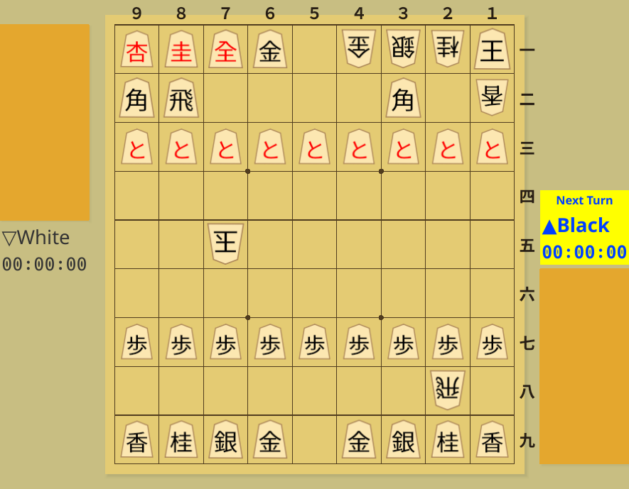
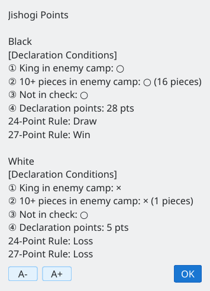
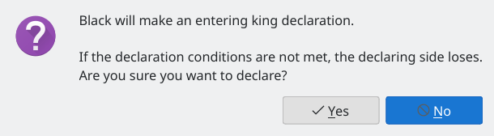
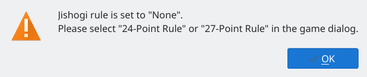
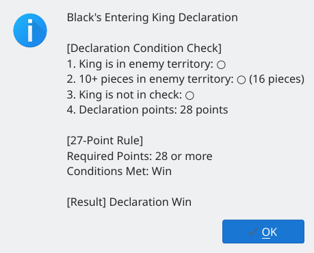
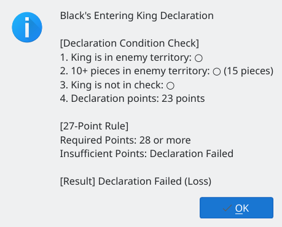

Check impasse points and entering-king declaration conditions
Screenshots were captured on Linux with the English interface.
Calculate points from the current position and check declaration conditions
When both kings have entered the opponent's camp, ending the game by checkmate becomes difficult. In such positions, you can check impasse points and make an entering-king declaration.

Entering-king position: Black's king is in the opponent's camp, with many promoted pieces
Choose Game → Jishogi Points to display points for the current position. You can check the following declaration conditions for Black and White.

Impasse points: Black has 28 points and wins under the 27-point rule; White has 5 points and loses
Declare from the Game menu
Choose Game → Entering King Declaration. A confirmation dialog appears before the declaration. If the conditions are not met, the declaring side loses, so check Jishogi Points beforehand.

Declaration confirmation: a warning that failing the conditions results in a loss
To make an entering-king declaration, set the impasse rule to the 24-point or 27-point rule in the game dialog. Declarations are unavailable when the rule is set to None.

Impasse rule set to None: a prompt to select a rule in the game dialog
View the results of the declaration checks
If all conditions are met, the declaration succeeds. The result window lists each condition and explains the required points and whether the selected 24-point or 27-point rule is satisfied.

Successful declaration: all conditions met, with at least 28 points under the 27-point rule
If the declaration points fall below the required total, the declaration fails and the declaring side loses. The result window shows the points shortfall.

Failed declaration: 23 points against the required 28 under the 27-point rule; the declaring side loses